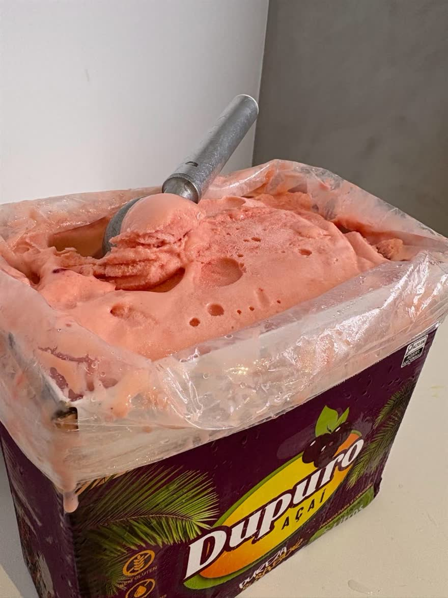
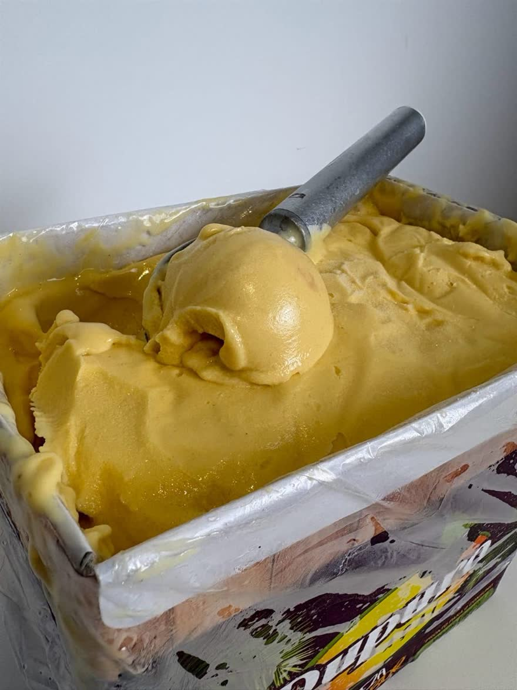
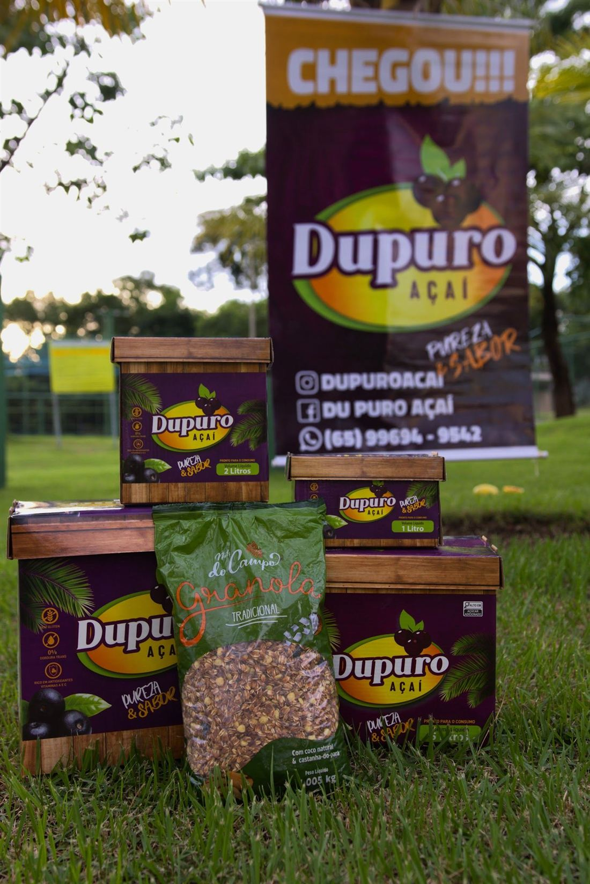
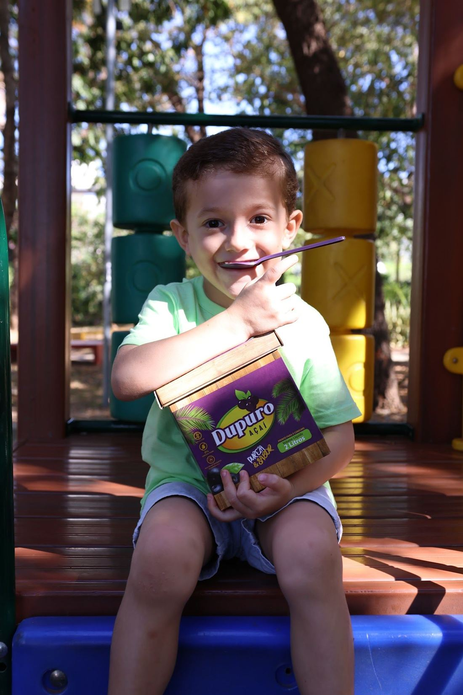
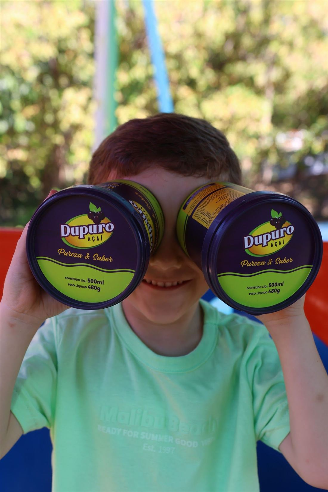
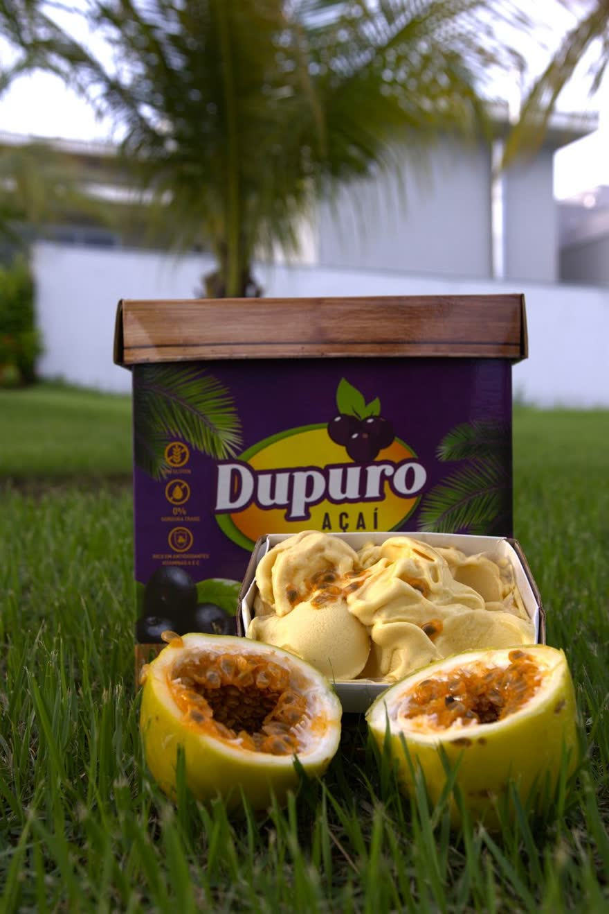

Caixas de açaí puro e cremes, direto da nossa fábrica pra sua família. Você escolhe se recebe de manhã ou à tarde — e acompanha a entrega em tempo real.
Entrega em Cuiabá e VG●Direto da fábrica●Açaí puro + 8 cremes●Pix ou cartão●Acompanhe ao vivo●Entrega em Cuiabá e VG●Direto da fábrica●Açaí puro + 8 cremes●Pix ou cartão●Acompanhe ao vivo●
Preço de fábrica
Escolha o tamanho da família
Todos os tamanhos com açaí puro ou o creme que você preferir.
🫐
Carregando…


Cremoso de verdade
Açaí puro + cremes que dão água na boca
Produzidos na nossa fábrica em Cuiabá. Na hora do pedido você vê o que tem disponível hoje.
Simples assim
Como funciona
Do pedido até a sua porta, você acompanha tudo — igual compra online de verdade.
🛒
Monte seu pedido
Escolha o tamanho, o sabor e a quantidade.
📍
Endereço e horário
A taxa de entrega aparece na hora. Você escolhe receber de manhã ou à tarde.
💳
Pague com segurança
Pix ou cartão pelo Mercado Pago.
🗺️
Acompanhe ao vivo
Avisamos no WhatsApp quando sair pra entrega, com o mapa pra você ver a gente chegando.

🟢 WhatsApp · DupuroSeu pedido saiu para entrega! Estamos na sua região — acompanhe em tempo real 📍
Pra toda a família
O açaí que a criançada pede de novo



4,8★no Google
9sabores
100%direto da fábrica
Dúvidas
Perguntas frequentes
Até onde vocês entregam?
Entregamos em Cuiabá e Várzea Grande, até 20 km da nossa loja no Jardim Imperial. No pedido, é só digitar seu endereço que o site já diz se atende e quanto fica a entrega.
Quanto custa a entrega?
A partir de R$ 5,00 (até 3 km), e R$ 1,50 por km a mais. O valor exato aparece antes de você pagar.
Que horas chega?
Você escolhe: manhã (8h às 12h) ou tarde (13h às 17h), de segunda a sábado. Pedidos até 11h podem sair ainda hoje à tarde.
Como eu pago?
Pix ou cartão de crédito/débito, pelo ambiente seguro do Mercado Pago. Seu pedido só entra na rota depois que o pagamento é confirmado.
Consigo acompanhar a entrega?
Sim! Quando sair pra entrega você recebe um WhatsApp com o link do mapa pra ver a gente chegando em tempo real.
Como conservo o açaí?
Guarde no freezer assim que receber. Na hora de servir, deixe uns minutinhos fora pra ficar no ponto de colher.
Bateu vontade?
Monte seu pedido em 1 minuto e receba em casa, sem sair do sofá.